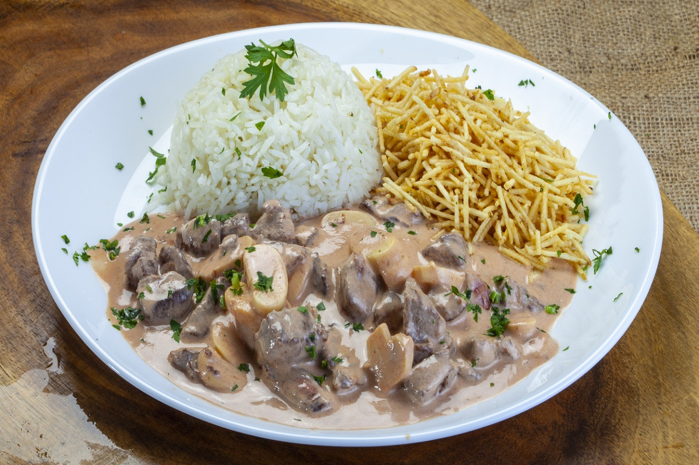

Brazilian Beef Strogonoff Recipe

Description
In Brazil, this Beef Strogonoff recipe is a classic one.
You can do it over and over again, especially when receiving
guests - it's great because you can do it ahead and
just warm it up when they arrive.
Although Strogonoff is originally a Russian dish, the
Brazilian version of Beef Strogonoff is very different
and is a crowd pleaser all the time. You can use mild
sweet paprika or the spicy paprika.
Ingredients
- 3 pounds fillet steak
- 2 tablespoons flour
- 4 tablespoons sunflower oil
- 1 onion - medium size finely chopped
- 2 garlic cloves finely chopped
- 1/4 cup cognac - good quality
- 1 tablespoon Dijon mustard
- 1 tablespoon Worcestershire Sauce
- 1/2 cup tomato sauce
- 4 tablespoons ketchup
- 1 tablespoon Paprika
- 3/4 cup cream
- 2 teaspoons flour or corn starch
- 3/4 cup Button mushrooms, clean and finely sliced
- 1 pinch salt
- 1 tablespoon lemon juice freshly squeezed
- 1 pinch parsley finely chopped for garnish
Directions
- Cut the steak into slices 0.5in thick, then cut each slice across the grain into strips 0.5in wide. Dust with the flour to coat (for sealing meat).
- Divide the beef in 4 parts. In a wide pan over high heat, add 3 tablespoons of oil and quickly seal the slices of beef. Remove each batch and continue until all the meat is cooked (the meat only needs a quick seal because it will be cooked in the sauce afterwards - otherwise it will become rubbery).
- When all the beef is sealed, Add it back to the pan, add the chopped onions and garlic and stir well. Let cook for 3 minutes.
- Add the cognac to deglaze the pan, stirring very well the bottom of the pan and let cook over medium heat until the alcohol has evaporated.
- Add the Paprika, the Dijon mustard, the ketchup, the Worcestershire Sauce, mix well and cook 2 minutes.
- Add the tomato sauce and the ketchup, mix and cook for 12 minutes. Season with salt.
- In a sautée pan, over high heat add 1 tablespoon of oil and stir fry the clean and sliced button mushrooms until golden.
- n a bowl, add the flour or corn starch and add a little cream and whisk well so you don't get lumps. Add the remaining cream, whisking well. Add a laddle of hot Strogonoff sauce to the cream mixture and whisk.
- Pour the cream and starch mixture back in the pot, add the Button mushrooms and mix well. Simmer over low heat for 10 minutes to cook the starch and mix all the flavours, stirring from time to time. The sauce should thicken but be smooth, coating well the meat. Remove from the heat and add the lemon juice and check the seasoning.
- At this point you can put the Strogonoff aside until you are ready to serve. Serve hot in a terrine sprinkled with the parsley.
- It is usually served with cooked Basmati rice, shoestring potatoes and a side salad.